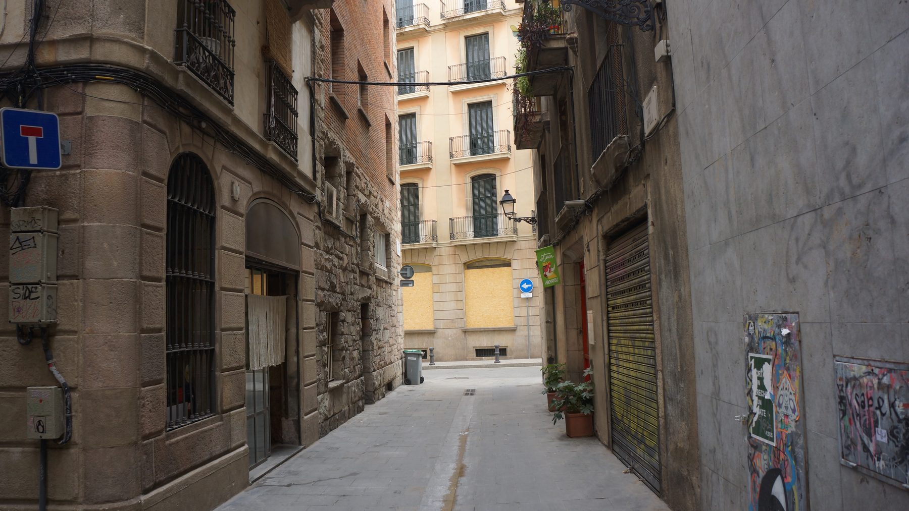
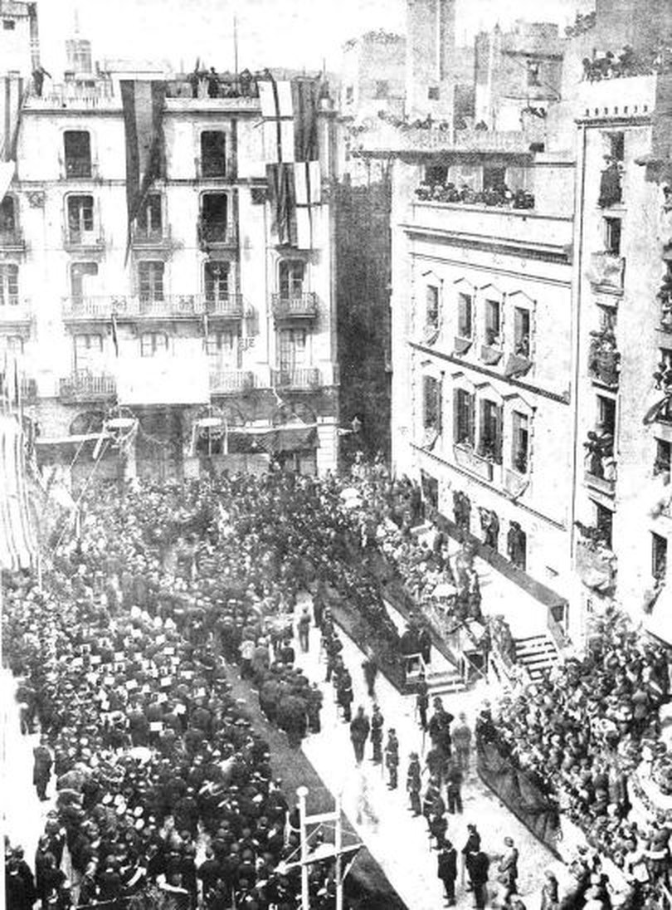
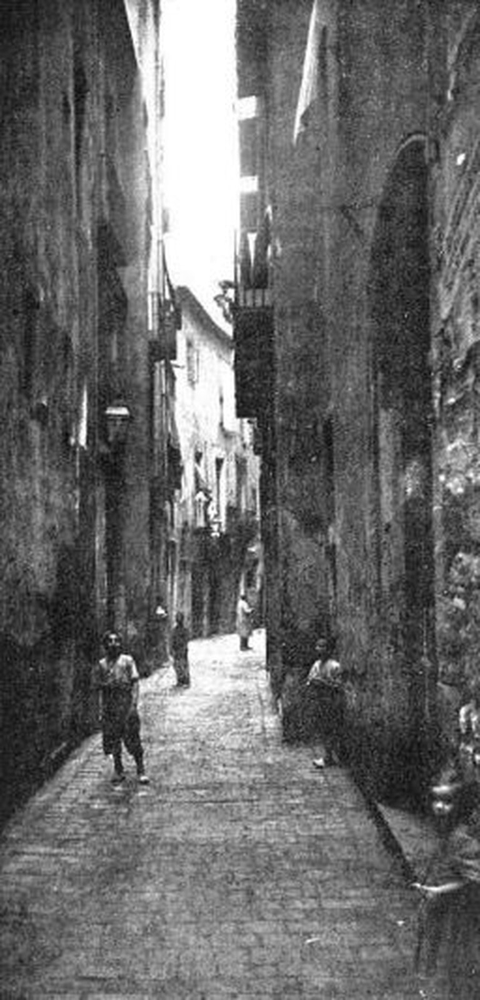

Ripoll, 12 (1891-1908)
Audioguia
Prem play per escoltar la història
Àudio pendent de gravació
Dues llars en una mateixa finca
Aquesta parada no explica la història d'una porta, sinó la d'un edifici. A Ripoll 12 hi van viure dos fills de Pasqual i Rosa, en dos pisos diferents i en dos moments diferents.
Pau Godes Caballeria va viure al tercer pis entre 1891 i 1898. Durant una part d'aquells anys també apareix vinculat a Banys Vells 15, de manera que no podem fixar amb precisió el moment exacte en què es va independitzar. El 1898 va deixar Ripoll i se'n va anar a Allada 12.
El 1899, un any després de la sortida de Pau, hi va arribar el seu germà Artur amb Emília, els nens Emili i Ernest, i Mercè. No van ocupar l'antic pis de Pau: es van instal·lar al segon pis, segona porta.
Els germans no van coincidir a l'escala per un any de diferència.
Dos habitatges, una mateixa finca
Pau: de la llar familiar a una vida pròpia
Pau tenia uns 19 anys quan va quedar associat al tercer pis d'aquesta finca. És un dels primers moviments independents dels fills de Pasqual i Rosa.
Més endavant va treballar com a cap d'estació a Sarrià i va desenvolupar una activitat literària vinculada a «Lo Mirall del Dia». D'ell arrenca la branca dels Godes de Sarrià.
Que durant uns anys aparegui alhora a Ripoll i a Banys Vells no és un error dels registres: marxar de casa era, sovint, un procés llarg i no una data.
La família d'Artur creix
Artur i Emília van arribar des de Sant Pere Mitjà amb dos infants: Emili, de quatre anys, i Ernest, de dos. Mercè, la germana d'Artur, va continuar formant part de la llar.
Durant els gairebé nou anys que hi van viure van néixer tres fills més, tots tres en aquesta casa: Rosa, el 6 de juliol de 1899; Mercedes, el 21 de febrer de 1901; i Josep Maria, el 14 de gener de 1908.
El gener de 1908, després del naixement de Josep Maria, hi convivien vuit persones: Artur, Emília, Mercè i els cinc nens.
Rosa va néixer amb prou feines uns mesos després del trasllat: la família estrenava casa i criatura alhora.
Artur entre el Liceu i la música religiosa
Artur va continuar treballant com a comprimari de la companyia d'òpera italiana del Gran Teatre del Liceu, interpretant els nombrosos papers secundaris que calien per completar els repartiments.
Paral·lelament exercia de mestre de capella i component. La música no era una afició domèstica: era l'ofici que articulava la seva vida pública i que sostenia una família cada vegada més nombrosa.
Vuit persones en un segon pis, i un sol sou, guanyat cantant papers que no surten al cartell.
Altes i baixes de l'edifici
-
1891
Arribada de Pau Godes Caballeria
Pau, d'uns 19 anys, queda associat al tercer pis de Ripoll 12.
-
1898
Sortida de Pau
Deixa la finca i es trasllada a Allada 12.
-
1899
Arribada d'Artur, Emília, Mercè, Emili i Ernest
S'instal·len al segon pis, segona porta, un any després que Pau marxés del tercer.
-
6 de juliol de 1899
Naixement de Rosa Godes Hurtado
La tercera filla d'Artur i Emília neix en aquesta casa.
-
21 de febrer de 1901
Naixement de Mercedes Godes Hurtado
La quarta filla també neix aquí.
-
14 de gener de 1908
Naixement de Josep Maria Godes Hurtado
El cinquè fill. Amb ell, la casa arriba a vuit persones.
-
15 de febrer de 1908
Sortida cap a Sant Gervasi
Tot just un mes després del naixement de Josep Maria, la família deixa el centre històric.
15 de febrer de 1908
Els Godes deixen Ciutat Vella
Artur era una persona de salut delicada. El febrer de 1908 la família va deixar la ciutat vella i es va instal·lar als baixos del número 69 del carrer Major de Sant Gervasi.
El canvi buscava un entorn més obert per a ell i per als nens, lluny de la densitat dels carrers antics. I va coincidir amb una nova etapa professional: cap al 1908 Artur consta com a mestre de capella de l'església de la Bonanova, molt a prop del nou domicili.
Sant Gervasi no era un poble aïllat: era un antic municipi incorporat a Barcelona el 1897, en ple procés d'urbanització i ben connectat amb el centre per ferrocarril i tramvia. Però per a la família sí que era un canvi clar: deixaven un pis de la ciutat vella per uns baixos en una zona molt menys congestionada.
Aquí s'acaba el recorregut dels Godes per Ciutat Vella. Cinquanta-sis anys després que Pasqual hi arribés des de Castelló, els seus néts creixerien ja a la muntanya.
La Via Laietana
La família va marxar el 15 de febrer de 1908. Vint-i-quatre dies després, el 10 de març, el rei Alfons XIII va agafar un pic i va picar simbòlicament la porta del número 71 del carrer Ample.
Començaven els enderrocs de la Via Laietana. El pla de reforma interior d'Àngel Baixeras, aprovat el 1895 i encallat durant anys, obriria una avinguda de nou-cents metres a través del cor de la ciutat vella.
El preu va ser centenars d'edificis enderrocats, desenes de carrers i places desapareguts del tot o en part, i unes deu mil persones desallotjades. El mateix 1908 l'Ajuntament va convocar un concurs de dibuixos i fotografies per deixar constància del que estava a punt de desaparèixer.
El carrer de Ripoll és a seixanta metres del traçat. Va sobreviure; molts dels seus veïns no van tenir tanta sort.

«Ilustració Catalana» núm. 250, 15 de març de 1908 · Domini públic

Vist des del carrer Graciamat, també esborrat del mapa · Domini públic
A l'esquerra, la multitud amuntegada el dia que el rei va picar la primera porta, amb els edificis condemnats encara drets al voltant. A la dreta, un dels carrers que hi havia darrere: fosc, estret, amb la roba estesa d'una banda a l'altra. Així era el barri on els Godes havien viscut cinquanta-sis anys.
No sabem si els Godes van marxar sabent el que venia. Però van sortir d'aquell barri just abans que se l'enduguessin per davant.
Context Espanya
El període comença sota la regència de Maria Cristina i entra en una nova fase quan Alfons XIII assumeix personalment la Corona el 1902.
El país continuava pair la crisi del 98 i les febleses del sistema de la Restauració: alternança política controlada, desigualtat social, conflictivitat obrera i demandes creixents de reforma.
Context Catalunya
El Tancament de Caixes de 1899 va convertir la protesta fiscal de comerciants i industrials en una crisi política. El 1901 va néixer la Lliga Regionalista i el catalanisme conservador va obtenir representació electoral.
La resposta a la Llei de Jurisdiccions va afavorir el 1906 la formació de Solidaritat Catalana, que va reunir sensibilitats polítiques molt diverses i va aconseguir una àmplia victòria electoral el 1907.
Context Barcelona
La ciutat vivia l'esplendor del Modernisme, l'electrificació dels tramvies i una transformació industrial i urbana molt ràpida.
Aquella modernització convivia amb tensions socials fortes: la vaga general de 1902 va paralitzar Barcelona i va ser reprimida per l'exèrcit.
Mira al teu voltant
Mireu el volum de l'edifici i penseu en els habitatges superposats. Pau va viure al tercer; anys després, Artur i Emília hi van criar cinc fills al segon, amb Mercè. Aquesta parada no és la història d'una porta, sinó la d'una finca que va acollir dues etapes diferents de la mateixa família.
Consulta de l'Arxiver
Per què es va obrir la Via Laietana a través de la ciutat vella?